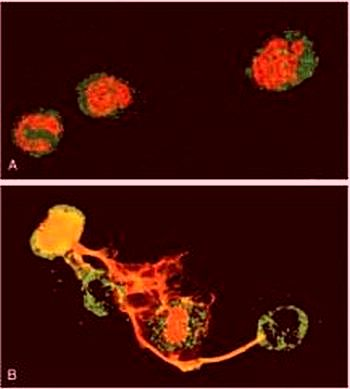
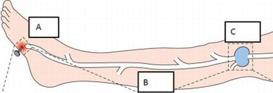
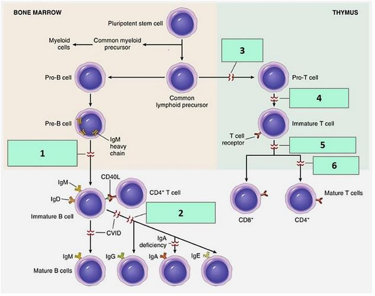
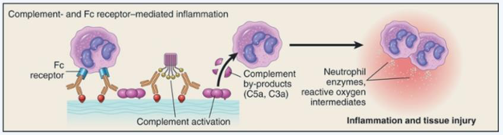
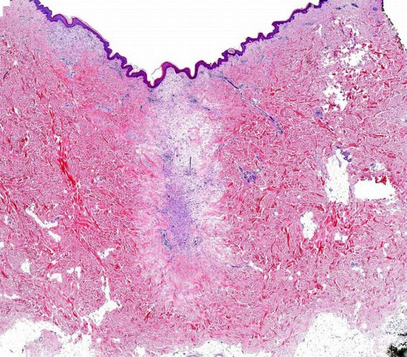
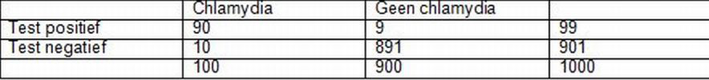
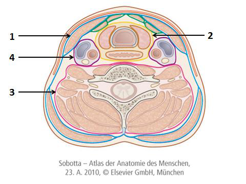

Menu
Schade, Afweer en Herstel2e Toetsmoment 2016‑2017
Examen inleveren
Weet je zeker dat je het examen afsluit?
Examen resetten
Al je antwoorden worden gewist en je begint opnieuw. Weet je het zeker?
Jouw resultaten
Schade, Afweer en Herstel · 2e Toetsmoment 2016‑2017
—
/ 68
0
Goed
0
Fout
0
Niet beantwoord
Vraag 1
In een acute ontstekingsreactie reageren arteriolen met vasodilatatie. Welk klinisch waarneembaar verschijnsel is hiervan het rechtstreekse effect?
Vraag 2
In een acute ontstekingsreactie reageert de microvasculatuur met verhoogde permeabiliteit. Welk gevolg heeft dit op de viscositeit van het bloed, daar ter plaatse?
Vraag 3
In welke fase van diapedese van een leukocyt door de vaatwand zal deze collagenase moeten secerneren? Tijdens…
Vraag 4
Welk proces wordt gestimuleerd door sommige IgG's (zoals IgG1), door complementfactor C3b, én door collectines?
Vraag 5
Zet de gebeurtenissen in een acute ontstekingsreactie in de goede volgorde. Kies bij elke positie de juiste gebeurtenis.
Sleep een optie naar de bijbehorende rij, of tik eerst op een kaart en dan op een rij.
Positie 1
Sleep hier naartoe
Positie 2
Sleep hier naartoe
Positie 3
Sleep hier naartoe
Vraag 6
Wat gebeurt er bij 'regurgitatie' en 'gefrustreerde fagocytose'?
Vraag 7
Bron: Robbins Basic Pathology, 9th ed., figuur 2-9 A en B.
Welk proces wordt in figuur B getoond?

Vraag 8
Welk mechanisme verklaart de pijnstillende en koortswerende werking van aspirine en indomethacine? Remming van…
Vraag 9
Welke twee effecten kunnen worden geïnduceerd door PAF, platelet activating factor?
Meerdere antwoorden mogelijk.
Vraag 10
Geef bij deze taken aan of die horen bij Th1-cellen, Th2-cellen of Th17-cellen.
Sleep een optie naar de bijbehorende rij, of tik eerst op een kaart en dan op een rij.
inductie van alternatieve activatie van macrofagen
Het enzym C3 convertase remt de binding van C3b aan de bacteriewand.
Vraag 13
De afwezigheid van CD59 op erythrocyten leidt tot…
Vraag 14
Patiënten met de ziekte CGD hebben een defect in de synthese van een van de componenten van fagocyten-oxidase. Wat is hiervan het gevolg?
Vraag 15
Patiënten met de ziekte LAD-2 hebben een defect in de synthese van sialyl-Lewis X. Wat is hiervan het gevolg?
Vraag 16
Bij een patiënt wordt geconstateerd dat door een genetische mutatie het aantal macrofagen verminderd is.
Kies de juiste alternatieven.
Deze patiënt zal last hebben van meer infecties.
Vraag 17
Het constante gedeelte van een antilichaam bepaalt de specificiteit van het antilichaam.
Vraag 18
T-cellen kunnen met de TCR binden aan…
Vraag 19
Wat zijn de effector moleculen van B-cellen?
Vraag 20
Op welke twee plekken in het lichaam vindt de ontwikkeling van B-cellen tot aan naïeve rijpe B-cellen plaats?
Meerdere antwoorden mogelijk.
Vraag 21
Immature B-cellen die in het beenmerg met zelf antigenen reageren…
Vraag 22
Wat ontstaan er tijdens de somatische hypermutatie?
Vraag 23
Bron: Parham; The Immune system; 4th ed. Fig 7.4.
Op de foto is een thymus te zien van…
Vraag 24

Geef voor blokken A t/m C aan welk proces daar plaatsvindt (zie afbeelding).
Sleep een optie naar de bijbehorende rij, of tik eerst op een kaart en dan op een rij.
A
Sleep hier naartoe
B
Sleep hier naartoe
C
Sleep hier naartoe
Vraag 25
Activatie van T-cellen in de afwezigheid van co-stimulatie leidt tot…
Vraag 26
Welke twee functies hebben macrofagen in de randsinus van de lymfeklier?
Meerdere antwoorden mogelijk.
Vraag 27
Dendritische cellen, die via de lymfevaten binnen komen, gaan in de lymfeklieren naar de B-cel follikels en presenteren daar immuuncomplexen aan B-cellen.
Vraag 28
In de afwezigheid van T-regulatoire cellen kunnen…
Vraag 29
Elk individu heeft verschillende MHC isoformen. Waarom is dit nodig?
Vraag 30
Kies de juiste alternatieven.
Wanneer een naïeve T cel geactiveerd wordt, zal de cel als eerste maken, waarna de T cel zal gaan .
Vraag 31
Naïeve CD4 T-cellen kunnen differentiëren naar verschillende typen effector T-cellen. Welke twee factoren bepalen welke Th-subset uiteindelijk wordt gevormd?
Meerdere antwoorden mogelijk.
Vraag 32
Via welk proces doden cytotoxische CD8-cellen geïnfecteerde cellen?
Vraag 33
De αβ TCR bevat intracellulaire domeinen die de signaaltransductie in gang zetten.
Vraag 34
Hoe worden tijdens een type I hypersensitiviteitsreactie de mestcellen geactiveerd?
Vraag 35
Kies de juiste alternatieven.
De late-fase reactie in een astma-aanval wordt gekenmerkt door onder andere en dit is (mede) het gevolg van .
Vraag 36
Kies de juiste alternatieven.
De tuberculine-reactie is een voorbeeld van en is indicatief voor de aanwezigheid van die specifiek zijn voor mycobacteriële eiwitten.
Vraag 37
Een cytotoxische T-cel van een recipiënt van een transplantaat herkent een peptide, aangeboden door een tubuluscel van een niertransplantaat als 'non-self'. Wat is het gevolg?
Vraag 38
Van welke type hypersensitiviteit zijn type 1 diabetes mellitus en Hashimoto thyreoïditis beide een voorbeeld?
Vraag 39
Welke ziekte wordt veroorzaakt door abnormale extracellulaire depositie van immuunglobuline lichte ketens, SAA, APP of transthyretine TPP, in een β-pleated sheet-configuratie?
Vraag 40
Bij welke autoimmuunziekte staat vorming van immuuncomplexen, bestaande uit kernantigenen en autoantistoffen, centraal in de pathogenese?
Vraag 41

Welke immuundeficiëntie hoort bij cijfer 2, en welke bij cijfer 3 (zie afbeelding)?
Sleep een optie naar de bijbehorende rij, of tik eerst op een kaart en dan op een rij.
Cijfer 2
Sleep hier naartoe
Cijfer 3
Sleep hier naartoe
Vraag 42
Bron: Robbins Basic Pathology, 9th ed., figuur 4-10B.
Welk type hypersensitiviteit wordt hier getoond?

Vraag 43
Kies het juiste antwoord / de juiste antwoorden (1, 2 of 3 antwoorden zijn juist). Wanneer vindt verticale transmissie (van moeder naar kind) van HIV plaats?
Meerdere antwoorden mogelijk.
Vraag 44
Welke eigenschap van het HIV virus zorgt ervoor dat een simpele vaccinatie met een HIV specifiek antigeen geen of nauwelijks bescherming biedt tegen een HIV-infectie?
Vraag 45
Bij patiënten met een defect in de transcriptie AIRE is de negatieve selectie in de thymus verstoord. Waar heeft deze groep patiënten last van?
Vraag 46
Tijdens de aanmaak van de BCR in de cel treedt allelische exclusie op. Dit betekent dat…
Vraag 47
Wanneer bij een patiënt geconstateerd wordt dat zowel T- en B-lymfocyten niet functioneel zijn, denk je als eerste aan een mutatie van het molecuul…
Vraag 48
Bij een Th2-response op een infectie met Mycobacterium zal het immuunsysteem er in slagen om veel antilichamen tegen de pathogenen te maken, maar kan de bacterie nooit geheel uit het lichaam verwijderd worden.
Vraag 49
Bij het remodelleren van littekenweefsel vindt strikt gereguleerde matrixafbraak plaats. Welke eiwitten remmen de matrixafbraak?
Vraag 50
Juist of onjuist? Derdegraads brandwonden kunnen het beste zo snel mogelijk operatief worden behandeld.
Vraag 51
Waarop lijken iPS cellen, voor wat betreft hun capaciteit tot differentiatie tot verschillende celtypen, het meeste?
Vraag 52
Tijdens de embryonale ontwikkeling worden bloedvaten gevormd door aggregatie van endotheel-voorlopers, de angioblasten. Hoe wordt dit proces genoemd?
Deze microscopische foto van een preparaat uit een e-learningmodule van de cursus toont centraal een afwijkend gebied. Waaruit bestaat deze afwijking?

Vraag 55
Antilichamen worden veel als therapie gebruikt om ziekmakende immunologische processen te blokkeren. Deze antilichamen kunnen echter ook weer afweerreacties oproepen, waardoor ze als therapie onbruikbaar worden in de patiënt. Hoe tracht men deze afweer tegen de therapeutische antilichamen te voorkomen?
Vraag 56
Kies de juiste alternatieven.
Bij immunisatie worden ingespoten om onmiddellijk de werking van een schadelijke stof te blokkeren.
Vraag 57
Een patiënt heeft last van aanhoudende intracellulaire infecties. Welk cytokine wilt u als therapie voorschrijven om deze infecties te beëindigen?
Vraag 58
Antilichamen tegen CTLA4 worden gebruikt als kankertherapie. Hiermee wordt de…
Vraag 59
Een 30-jarige vrouw bezoekt de huisarts met klachten over onregelmatig vaginaal bloedverlies. De huisarts schat de vooraf kans op chlamydia op 10%. Chlamydia is een heel besmettelijke seksueel overdraagbare aandoening die wordt veroorzaakt door de bacterie Chlamydia trachomatis. De huisarts neemt materiaal af voor een test op chlamydia trachomatis en de uitslag is positief. De sensitiviteit van de test is 90% en de specificiteit 99%.
Bereken de achterafkans afgerond op een percentage zonder decimalen (dus zonder cijfers achter een komma).

Vraag 60

Welke halsfasciën worden aangegeven bij nummers 1 t/m 4 (zie afbeelding)?
Sleep een optie naar de bijbehorende rij, of tik eerst op een kaart en dan op een rij.
Nummer 1
Sleep hier naartoe
Nummer 2
Sleep hier naartoe
Nummer 3
Sleep hier naartoe
Nummer 4
Sleep hier naartoe
Vraag 61
Lymfadenitis colli is een aandoening die… (meerdere antwoorden kunnen juist zijn)
Meerdere antwoorden mogelijk.
Vraag 62
Welk geneesmiddel dient als eerste te worden toegediend bij een anafylactische reactie als gevolg van toedienen van een antibioticum bij een patiënt die bekend is met een allergie voor dit antibioticum?
Vraag 63
Een patiënt heeft een zeer pijnlijke rode gezwollen knie sinds één dag. Aspiratie van synoviale vloeistof leidt tot de diagnose jicht. Welke behandeling is nu het meest effectief?
Vraag 64
Bij een patiënt met een acute artritis is de diagnose jicht gesteld. Welk pathofysiologisch mechanisme staat hierbij centraal?
Vraag 65
Patiënten met HIV/AIDS hebben een hogere kans op tuberculose.
Kies de juiste alternatieven.
Dit is een voorbeeld van .
Vraag 66
Een veel voorkomende complicatie van chemotherapie is beenmergdepressie, met als gevolg bijvoorbeeld anemie, trombopenie en neutropenie.
Kies de juiste alternatieven.
De infecties die we vaak zien bij patiënten met ernstig verlaagde neutrofiele granulocyten zijn: .
Vraag 67
Welk soort leukocyten is tijdens een virale infectie toegenomen in de differentiatie?
Vraag 68
Bij een patiënt die u analyseert wegens vermoeidheid en splenomegalie staan Epstein Barr virus (EBV) infectie en chronische myeloide leukemie (CML) in de differentiaal diagnose. Deze patiënt blijkt ook lymfadenopathie te hebben. Wat betekent dit laatste voor uw differentiaal diagnose?